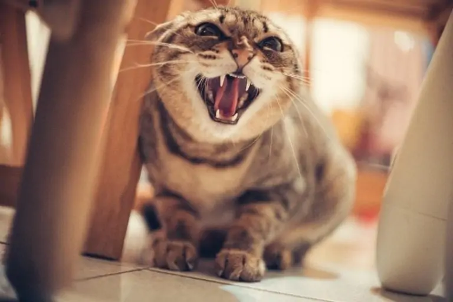
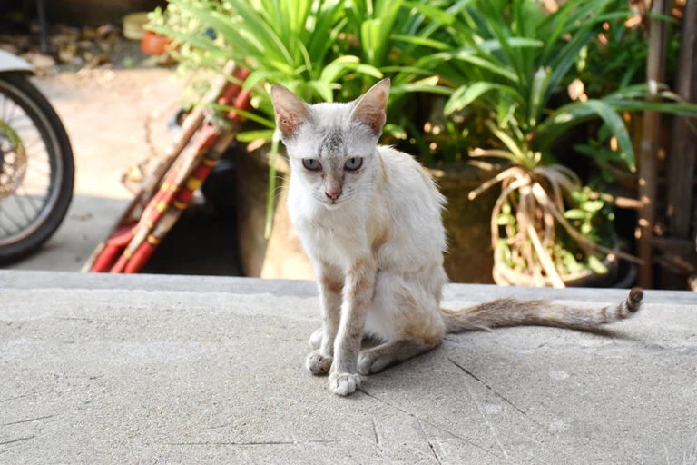

HOW TO TELL IF YOUR CAT IS HUNGRY ?

Sign 1
Eating Too Quickly
Some cats eat faster than others, especially if there’s multi-cat competition in the household. But you should be able to tell the difference between them. If a cat eats so quickly you can’t even see them chew, it’s a sign that they are likely truly hungry.
Cats who are competition eaters will often guard the whole food bowl, growling and hunching to make sure no one else dares get the kibble. But a cat who pays no attention to its surroundings and is fixated on the food is likely very hungry.
Sign 2
Regurgitating Food
If a cat eats very quickly, it’s often followed up by upchucking its meal. The difference between vomiting and regurgitating is easy to spot once you know the difference.
Regurgitation happens immediately following feeding and is primarily undigested food and a passive motion with little or no retching. On the other hand, vomit is acidic, often liquid, and rancid, mixed with much more bile and nearly no distinguishable food pieces, there is also effort involved in vomiting and there will be visible signs of retching. When a cat regurgitates, it often looks like a tube of food material. All food particles are noticeable, and it’s more solid than liquid.
Regurgitation is especially common when kitties eat dry kibble. Since dry kibble absorbs liquid and swells in the belly, there can be a delay in the signal to the brain, telling the cat it’s full. As disgusting as it might be to watch, some cats will then eat what they threw up!
Sign 3
Eating Unusual Food Items
If a cat is starving, they may scrape the bottom of the barrel—quite literally—when looking for options. Since cats are obligate carnivores, they might eat just about any food item they can find, which includes things that might potentially be harmful to them.
A cat might also develop a disorder caused by a lack of certain nutrients called pica. Pica triggers an urge to eat non-edible materials like plastic, clay, dirt, cardboard, paper, wool, and other similar items.
We should note that pica can have many causes, and lack of proper diet isn’t always the reason. If untreated, pica can have dire consequences, such as poisoning if cats eat toxic substances. However, you shouldn’t hesitate to get a cat to a professional if they eat these sorts of materials.
Sign 4
Neurotic Behavior
It might seem like the cat is sped up or agitated. They might also sprint to the sound of a crinkling bag or the smell of food cooking.
We should be mindful that there are many cats who are being fed well and regularly but that are experts in begging food from people and behaving like they haven’t eaten in a year so take the whole situation into consideration. Also a cat may be under treatment from a vet for health conditions such as cancer or be very old and appear unkempt. If you have any questions about the health of a cat in your area ask around to see if any-one owns it first.
Sign 5
Skinny or Sunken Body
Some cats are naturally thin and certain breeds like the Singapura and Chausie stay relatively lean and fit their whole life. However, a very hungry kitty might have a tucked up body shape or visible rib cage. When a cat is skinny, you might also notice protruding hip bones and spine as you pet them. In addition to extreme weight loss, their coat will likely be drab, dull, and even patchy sometimes.